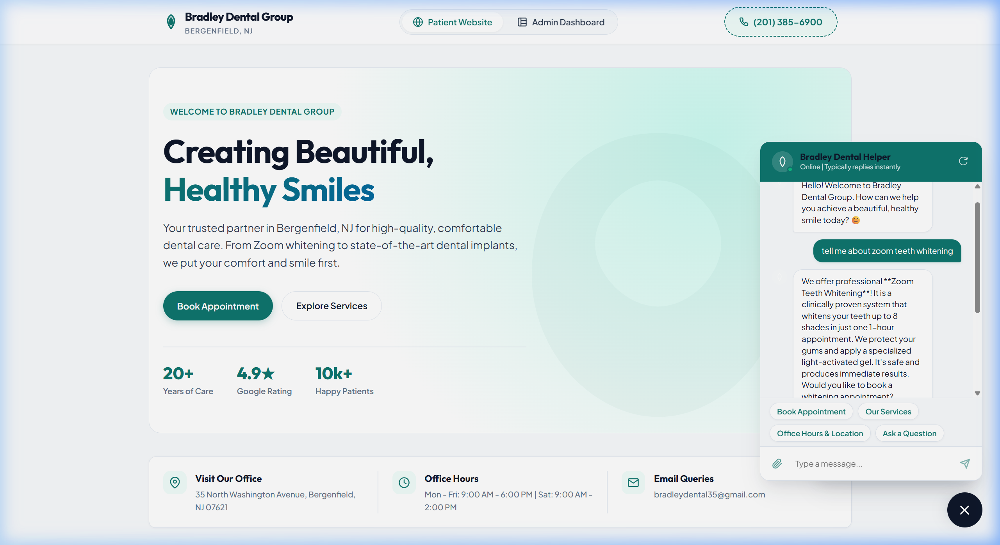
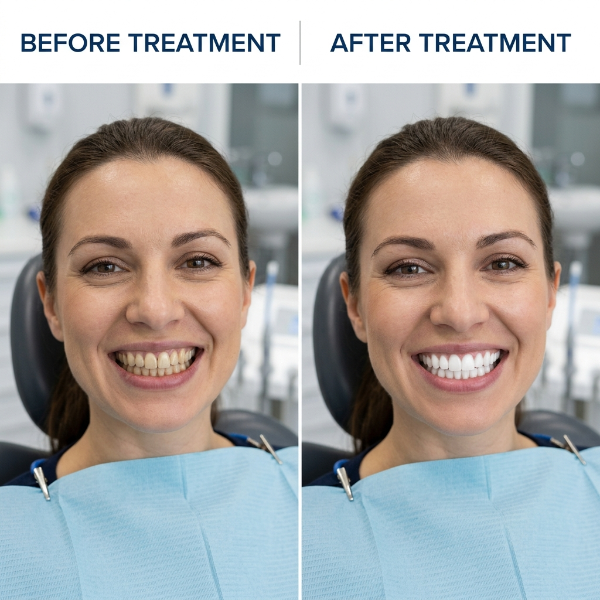
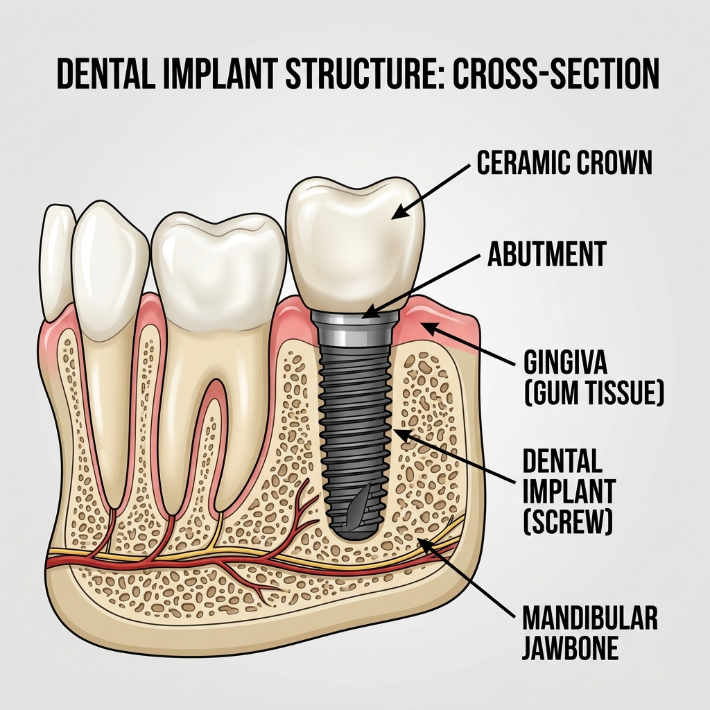
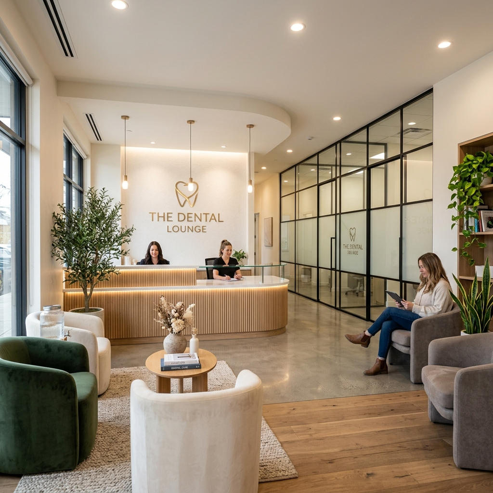

Chatbot PDF & Image Management System
User & Admin Operations Guide
This user manual details the functionality, workflow, and testing instructions for the customized file attachment and PDF generation module implemented for the Bradley Dental Group system.
System Architecture Note
This application relies on HTML5 file reader APIs, LocalStorage data persistence, and the html2pdf.js package. PDF logs automatically omit heavy raw base64 data to guarantee optimized file size and clean prints.
1. Patient-Facing Chatbot Features
Interactive Chatbot Helper in Action

1.1 Image & PDF File Attachments
Patients can attach digital copies of document credentials directly within their conversational stream:
- How to use: Click the paperclip icon in the message bar, select a local document (insurance card, photo of dental concern, etc.).
- Supported Formats: All standard image types (PNG, JPEG, WebP) and PDF documents.
- Size Constraints: Upload size is capped at 2.5MB to prevent database limits.
1.2 Render Behaviors inside Chat
- Images: Render instantly as a thumbnail inside the patient bubble. Patients can click the image bubble to open the full picture in a new tab.
- PDFs: Render as a clickable file card displaying the document name and download icon:
To demonstrate these responses, the chatbot automatically embeds illustrations matching key dental treatments:
Teeth Whitening Result

Dental Implant Structure

2. Administration Console Features
2.1 Leads Summary PDF Export
Receptionists can download patient scheduling request sheets formatted as professional clinic summary sheets:
- Navigate to the Admin Dashboard tab in the header.
- Click Leads Inbox in the sidebar.
- Locate the target patient lead row, and click the PDF icon (the file symbol next to delete).
- A document named
{PatientName}_lead_sheet.pdf will compile and download instantly.
2.2 Chat Log Transcript PDF Export
Clinic coordinators can export complete message logs for dental records:
- Navigate to Admin Dashboard -> select Chat Transcripts in the sidebar.
- Select a chat session from the list.
- Click the Download PDF button inside the viewer header.
- A document named
{PatientName}_transcript.pdf will generate and download to your machine.
2.3 Inspecting Patient Attachments
Any document or photo uploaded by a patient during their chat is saved inside their transcript. The admin panel renders these files inside the viewer message stream, allowing staff to click and download documents or preview images uploaded by the patient.
3. Theme Configurator & Office Showcase
Theme colors modified inside Chatbot Configuration apply immediately to the chatbot launcher, header, message bubbles, quick replies, and generated PDF document accents.
Our Modern Clinic Lobby Layout

Bradley Dental Group • 35 N Washington Ave, Bergenfield, NJ • (201) 385-6900